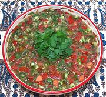

|
Beit Jirja SaladPalestinian Gaza | ||||
| Serves: Effort: Sched: DoAhead: |
5 w/bread ** 35 min Yes |
This is a "spoon salad", to be eaten with flat bread. It's a simple salad typical of Gazan refugees driven from the village of Beit Jirja, when it was destroyed by Israelis - see Comments. | |||
|
|
1/4 1 1/2 1/4 1 1/4 3-1/2 1 1 -------- |
c cl t c c oz # T --- |
Dill, fresh (1) Garlic Salt Lemon Juice, Chili Serrano (2) Parsley Cucumbers (3) Tomatoes Tahini, dark (4) -- Drizzle Olive Oil ExtV |
Make - (45 min)
|